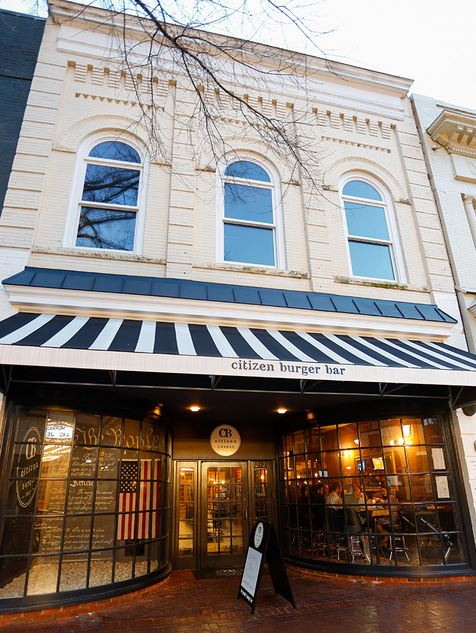

.png)
.PNG)
.PNG)
.PNG)
.PNG)
.PNG)
.JPG)
.JPG)
.PNG)
.PNG)


Hi folks! I have more of our recent road trip to share with you today, but I have to admit something to you first. I want to tell you about our first night’s city – Charlottesville, Virginia, but there is no way I can even scratch the surface of this fun town. We were there only one evening, and there are so many wonderful restaurants and places to shop and see that you could easily spend 2 weeks there and not fit it all in.
That one evening in Charlottesville was for celebrating our son’s 25th birthday. I had done a good bit of research on restaurants (and inns 🙂 ) to find just the right place for us. So I am going to share our birthday dinner, a number of restaurants that I read about in my research, and a couple of places I wanted to see but didn’t have time for. If you have been to C’ville and have more info to share with us, please jump in the comments and share away! We would all love to hear! Alright, let’s get started. 🙂

Our son is a true hamburger guru. Seriously. He is forever telling us to replace our gas grill with a Green Egg, buy a meat grinder, and purchase a mixture of meats to use in making hamburgers. (We’ve done none of those things yet. 🙁 ) After reading waaaay too many restaurant reviews and menus, I just knew I had found the perfect one for his birthday dinner – Citizen Burger Bar there in Charlottesville. The people at Citizen are as burger obsessed as our son. How could anyone resist a burger like this…. yum.
So before we left on our road trip, I sent an email to him with a list of several restaurants and their menus and asked him to choose. Then I sat back and waited on him to choose Citizen. 🙂 His reply came back…”Mom, I think we should eat at….Public Fish and Oyster.” What?? No Citizen Burger Bar?! Maybe he missed it in my list. I replied back and got this answer: “I’ve already eaten there a couple of years ago when I visited UVA. It was great, but I want to try something different.” Well that made sense. See, he really did like the place!
 That evening we drove a few blocks from Oakhurst Inn to downtown Charlottesville. We walked around the area for a little while and then headed over to Public Fish and Oyster. It is located in a small, cozy old building.
That evening we drove a few blocks from Oakhurst Inn to downtown Charlottesville. We walked around the area for a little while and then headed over to Public Fish and Oyster. It is located in a small, cozy old building.
I wanted to eat outside at their charming outdoor dining area, but it was very full.
So we were seated in their dining room – a pretty space with peeling brick walls and a gorgeous tin ceiling.
My seat at our table faced the bar, so it was entertaining to watch the action there all evening. 🙂
They import oysters from all over, and each day’s selections are listed on a chalkboard on the back wall of the dining room.
Our son ordered a few raw ones to start his meal. They came with an assortment of 4 sauces, and he said they were all very good.
Then we all devoured the absolutely wonderful heirloom tomato caprese. Do any of you know what the black things are on it? We wondered but never asked our server, and I couldn’t figure it out from the flavor. (Note: Mystery solved! Read the 7th comment below from Public Fish and Oyster’s chef! You will never believe what it is. 🙂 )
Bread was then delivered to the table.
Yes, we ate that too!
Then came our entrees. Our son had a snapper dish with plantains which he and my husband both thought was full of flavor. Unfortunately, my photo of it turned out too blurry with the dim lighting in the restaurant, but I did manage to get a fairly good one of my husband’s halibut en papillote. He said it was good, but he thought our son’s snapper was better.
All three of us agreed that I had the best entree – hanger steak with bordelaise sauce, Belgian fries, and a wedge salad. It was actually the best meal for me on the entire 11 day trip! I would order it again and again if we were there. 🙂 The steak was juicy tender. The fries were perfectly crunchy, and it was just the right amount of salad to go with it all.
Now remember this was a dinner to celebrate a birthday. We just HAD to order dessert. 🙂
We shared the homemade bourbon vanilla ice cream with fresh strawberries and an out-of-this-world delicious s’mores cream pie. That toasted homemade marshmallow was ooey-gooey heaven!
All in all, a wonderful meal for a birthday celebration. I think our son made a very good choice. 🙂
There were a few other places that I would like to try when we return to Charlottesville one day.
Threepenney Cafe – in an old service station.
Fry’s Spring Station is also in another old service station.

Salt Artisan Market (also in yet another service station….I think I am on to something with all of these!) Salt is great for sandwiches, and they are on the Monticello wine trail, and they will pack a picnic lunch for you.
For donuts, there were 2 names that continued to come up in my research:
#1 – Carpe Donut in their precious little red food truck. They use apple cider in their products.
and #2 – Spudnut – the place with the potato flour donuts. This one has been open since 1969 and is now run by the original owner’s daughter. And in case you are wondering, their potato flour donut recipe came from Germany.
Charlottesville has a very interesting and beautiful downtown pedestrian mall. It is a collection of 120 shops, over 30 restaurants, an ice park, a museum, and even a movie theater all housed in restored and renovated old buildings spread out around a central main street. The walks are all made of brick, and the entire area underwent a renovation back in 2009.
You can find everything from antiques to chocolate, children’s clothing to Urban Outfitters. The one store that I was really wanting to visit there was New Dominion Bookshop.
charlottesville.thescoutguide.com
The sheer number of books in New Dominion is amazing!
northernvirginiamag.com photo by Shelby Robinson
We were there on a Thursday night, and the sign said they would be open until 8:00 p.m., but at 6:30 the doors were locked, and it was closed. I guess I will have to add it to our agenda for a return trip. 🙂
And of course there are other places to visit while in Charlottesville.
Like Monticello… Thomas Jefferson’s unbelievably beautiful home, garden, and plantation.
You can read the information about tickets for various tours here.
Another not-to-be missed place near C’ville is Jefferson Vineyards. (Their vineyards are the closest ones to the city.) From their vineyards to their wine tastings to their summer concert series, you are sure to find something to enjoy there. Click on the link below the photo for more info.
And that is all the C’ville info I have for you today. I hope you will have an opportunity to visit this fun college town one day in the future. Coming up next in our road trip is our very cool hotel in New Haven!
Those folks know how to carry out a theme with class. 🙂 Hope to see you back here soon!
Until next time…


.PNG)
Kelly,
I am loving this trip. I have been to Charlottesville but it was a long time ago when we visited Monticello. Now, I want to go back.
Have you heard about Mountain Faith Band on the tv show America’s Got Talent.They are from our small town of Sylva, NC and have made it to the semi-finals. We are so proud they are shining such a bright, positive light on Western North Carolina. Tune in if you can tomorrow night.
I can’t wait for your posts about New Haven.
DiAnne
Kelly,
What a fun city to visit! We have been there for a night on our way to vacation before and just one night visit including dinner and hotel was not enough. I hope to get back that way some day and will absolutely have to visit Public Fish and Oyster. The food looks and sounds amazing. When we stayed there we had Italian at a restaurant name Bella. Thanks for sharing!
You really had me wondering about what those little black things were. Absolutely amazing and I bet delicious. Wonderful post.
Another great detailed post! 🙂 PFO sounds really good. I loved the old building and vintage details. How cool that the chef and manager commented! I’m not sure if I’ll make it there because my husband doesn’t like seafood, but your hangar steak and fries looked delicious so maybe there’s a chance. 😉 Thank goodness he loves Italian though and the last time we were in town we ate a block or so away at Bella’s. We also ate at Fry’s Spring Station on that trip. 🙂 It’s funny because our daughter lived next to Fry’s in college and she took her car to the service station more than once! 😀 Now, I am going to look at the other links. I’m looking forward to our…err, I mean your next stop in New Haven. 🙂
How fun! I would love to visit this town and restaurant! I would order what you had! I was gone last week on a beach trip. When we looked on tripadvisor for places to eat I found a place that had reviews saying they had the best tomato pie around….so, remembering your post, we had to try it. It was yummy but I still want to try your recipe. Hey, that bookstore looks like it could be in a movie!
I’m so glad you had a great visit to our town and particularly our little restaraunt. We look forward to welcoming you and your readers back soon.
Daniel Kaufman
Manager / Owner Public Fish and Oyster
Hey Kelly-
Those little black spheres are actually just balsamic vinegar. We bring it up to a simmer with a little agar agar and drop them into ice cold oil. The agar allows them to retain their shape, but doesn’t alter the flavor at all. Thanks so much for dining with us, and I’m glad you enjoyed everything. (While we ARE a seafood restaurant, we take a ton of pride in our steak frites, and it’s one of three items that never leave the menu). Cheers,
Donnie Glass, Executive Chef, PFO
A dear friend’s brother is the chef at Public Fish & Oyster! She will be so delighted that you enjoyed your visit. I’ll be sure to forward your post to her.
Hi Kelly,
I really must visit Charlottesville, if for no other reason but to eat at each of the places you shared. I love some of the menu items you shared from the place your son selected…but I confess, the burger and fries had my mouth watering. The small round black things looked like elderberries, but like one of your other readers, I think since you were at a fish place they could be some kind of caviar. Were they salty or sweet?
What a fun trip, can’t wait for the next installment.
xo,
Karen
I am enjoying traveling along with you Kelly. I love Charlottesville and have been there twice. I am so bad at remembering details, one reason I should blog more I think. I believe we stayed at The Boar’s Head, and I know we ate downtown and sat outside on that lovely mall. What I do remember is visiting Monticello and the vineyard, and going up to Montpelier also. We ended the trip at the Greenbrier in WV. Now that I remember! Virginia is a beautiful state.
Hey Kelly: I’m going for caviar – Why not? I’m thinking capers are very briny, almost lemony in flavor and it just seems to me that you would definitely notice that flavor. However, if it was caviar, one would assume the same – very strong flavor. It’s a mystery. This would definitely be a great place to visit. Am hoping to visit Monticello one day soon. Your detailed info will definitely be helpful.
Wow, it looks like you all had a good time and a great meal. I think those little black things on your salad are capers.
Thanks for all the info on Charlottesville, it sounds like a fun place to visit and most importantly to eat!! One of my favorite things!
That looks like a wonderful trip and a great town to visit. That looks like capers on the dish you had.